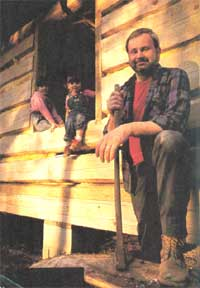
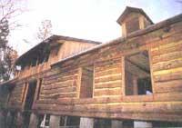
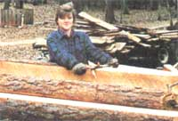
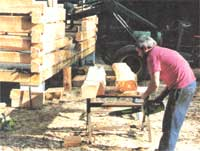
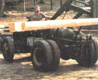
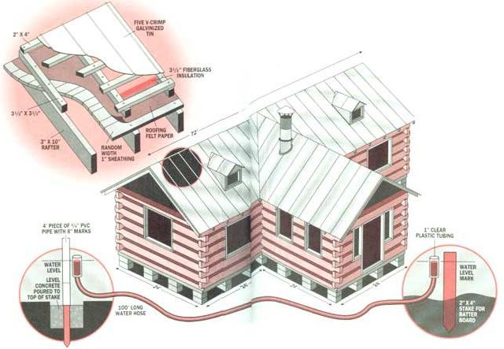
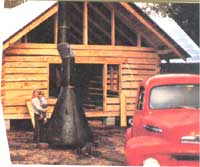
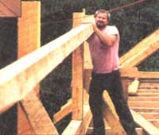
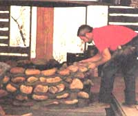

I Built A Log Cabin From Scratch For Under $11,000
After many personal setbacks, my dream is finally starting to come together.
By Dick Sellers
April/May 1993
This is the story of a long-time dream that is about to become reality. Like most people, I dreamed of owning my own home, in a place where my children could experience the peace of mind that comes from living in the country. I wanted my four daughters to enjoy the freedom and the comfort of knowing that our family could provide for ourselves. Part of this desire came from my own father, who shared with me his crystal clear memories of surviving the Great Depression. He taught me the importance of being self-reliant, no matter how bad the economy became.
My dream to build a log cabin by myself began almost 15 years ago. At that time the decision was made out of necessity, due to our financial status and the state of the economy in our area. As time went by, our finances improved and the necessity evolved into a dream - a dream that is finally starting to come together.
First Steps
All those years that I was dreaming, I of junk and equipment that I thought would be helpful in building a sawmill and forklift, or some other type of loader to handle logs and lumber. I read everything I could get my hands on about building log homes and sawmills, and assessed the resources available in our area. I also assessed my own skills and took the time to look carefully at many older buildings. All this research played a giant part in the actual building.
Over the years, I also noticed that many of those older wooden buildings that had survived the test of time had a lot of traits in common. Most of them had open-pier foundations that supported the structure at least 24" above the ground. I suppose this was to allow for good ventilation under the house, preventing problems caused by moisture, termites, and the like.
Most of the old buildings also had steep tin roofs with at least 36" of overhang - called eaves - all the way around. This tin provided a long-lasting, low maintenance, leak-proof roof that was easy to install. Long eaves also helped protect the buildings' sides from rain and long periods of direct sunlight. So I decided to incorporate an open-pier foundation at least 24" above the ground and a tin roof with at least 36" eaves in my own house. It was important that my home last far beyond my lifetime, so I could leave it behind for my daughters and perhaps for their children too.
As I was accumulating junk and equipment, I kept in mind a vision of those basic construction features, as well as a list of materials and equipment that I would need. Here's what my list consisted of:
- A sawmill capable of sawing timber up to 30" in diameter and 30" long.
- Some type of loader to load and unload logs and timber from a truck and the sawmill.
- A truck and trailer for hauling timber.
- An end trimmer to cut sawmilled boards to length. (Not a necessity, but quicker than squaring and cutting each board to length with a circular saw.)
- An edger to trim the lengthwise edges of sawmill slabs. (This allowed us to use the slabs produced when squaring a log, instead of discarding them.)
- A wheeled tripod with a wench that could be used to move logs around on the subfloor and hoist them into place.
- Miscellaneous hand and power tools such as a chain saw, ax, drawknife (for peeling bark from logs), shovels, cement-mixing equipment, block-laying tools, etc.
The first major piece of equipment I acquired was the sawmill. I knew I couldn't afford a new one, and even the used ones were beyond by means. So I started building one. For $100 I bought a burned mobile home with a 72' long frame, which I narrowed to make sawmill parts, including a 42" diameter saw blade and an old hand-crank Case engine. (I ran an ad for one in a statewide farmer bulletin and bought one for $800.) In addition, I bought some scrap automotive and lawn and garden equipment, and then built a sawmill that would produce boards or logs up to 18" wide and 35' long.
"The Thing" & Other Equipment
Next came a loader for handling the timber, logs, and boards. I purchased a 1962 GMC two-ton truck for $200 and converted it into a loader with forks capable of lifting 2,000 pounds, up to twelve feet high. The loader was also suitable for dragging the large trees we needed out of the woods. I converted the truck into a loader by removing the entire cab and then reinstalling the steering wheel, pedals, a homemade instrument panel, and a driver's seat from an old school bus in the center of the chassis, directly over the transmission and facing the rear. By turning the driving position backwards, I made the dual-wheeled rear axle now the front axle, so that the loader could be operated like a forklift. The original rear-axle springs were removed, and the axle was rigidly mounted for better stability.
For improved traction, I used pieces from the front-end loader of an old farm tractor to fabricate a lift with forks that would carry the weight on what was previously the rear drive axle. Basically, I turned the driving position backwards from what it originally was, so that the drive axle and forks are now in the front, and the wheels in the back do the steering. It sounds confusing, but it's easy to drive around, as long as you remember that it steers in exactly the opposite direction as a normal vehicle. Our loader is affectionately known as "The Thing," and is by far the most versatile and useful piece of equipment that we've used throughout the entire building process.
The next item on my list was a truck and trailer for moving cut trees back to the sawmill. I was able to borrow a two-ton truck from my father, and I built a 30'-long trailer from 2-by-5-inch steel tubing and covered it with pressure-treated lumber. We were a sight to see, riding down I-75 with 12'-long logs in the back of the truck, a 30'-long trailer loaded with logs, and "The Thing" on a tow bar bringing up the rear.
An end trimmer, used to cut boards to a specific squared length, was next on my list. I didn't consider this a necessity, but it sure did save time when it came to cutting a whole truck-load of boards to length at one time. Without the trimmer, we would have had to mark each board individually, and then square and cut them to length one at a time using a circular saw. I found an end-trimmer that had been built in the early '30s, but had long since been junked for $50. After making minor repairs and mounting an eight-horsepower engine on it, the chain-fed end-trimmer could cut both ends of a board square to any length between 4' and 18' in a matter of seconds.
Like I said, this wasn't an absolute necessity, but it certainly made life easier.
I also made my own edger for salvaging usable boards from sawmill slabs. All I needed was a 10' section of roller conveyor, some 1 "-round x 24"-long shafting, and two 10" circular-saw blades. I mounted one saw blade in a fixed location, and the other on an adjustable sliding hub with babbitt bearings. This made it easy to adjust the sawing width, according to the width of usable board I could cut from the slabs. I used a small tractor with a PTO (Power Take Off) shaft to power the edger.
Next, I needed to make a roll-around tripod capable of hoisting, moving, and suspending 24'-long logs and beams up to 12' high for stacking the log walls. I made the tripod from 2-by-2-inch steel tubing, welded in a 6' triangle with three wheels. One of the wheels is a steerable swiveling wheel with a handle for easy maneuverability. On this triangular frame, I mounted three 14'-long cedar poles vertically and then banded them together at the top. Then I mounted an 1,800-pound-capacity boat wench about chest-high on one pole, and a pulley at the top of the tripod. By using quarter-inch steel cable on the wench and over the pulley, I was able to hoist up the logs and beams and maneuver them into place.
Estimates & Materials
Now that I had all the equipment I thought I'd need, it was time to get a building permit and get started on our home. But first, I had to draw a few sketches showing the basic outline of the floor plan, so that I'd know how many trees to clear from the site, how many block pillars would be necessary for the foundation, and how many logs and other building materials I would use. Here's the list of materials I needed to build my 4,000-square-foot log house:
- 6 yards of concrete to pour 55 pads for the block pillar foundation
- 600 8-by-8-by-16-inch concrete blocks
- 55 4-by-16-by-16-inch concrete cap blocks
- 95 sheets 5V-crimp roofing tin 18-by-6-inches long
- 22 rolls of roofing felt
- 22 rolls of 23-by-3 1/2-inch fiberglass insulation for the roof
- 120 pine trees to be used for wall logs and lumber (floor sills and joists, rafters, roof decking, flooring, wall studs, wall covering, etc.)
We acquired the trees for absolutely no cost, other than gas for the truck, loader, and chain saw. Some of our trees came from the home site, and others came from folks who wanted trees removed from their yards, from a local highway-widening project, and from a small piece of property owned by my parents. In our area, if you keep an eye out, you can easily find enough trees to build an average-size home, since most people will let you have the trees just for removing them from their property.
Getting Started
The land I bought in 1987 to build on is about 7 1/2 acres and completely wooded except for a small yard with a mobile home. Being able to live on the land while building the house has been extremely convenient, allowing my wife and I to accomplish something almost everyday. For anyone who's thinking of building (or even having someone else build for them), I strongly recommend living next to the site.
Anyway, after acquiring most of the equipment and deciding on the actual site, we were ready to begin. In July 1991, my wife and I began clearing the site. We removed the trees by attaching a 150' cable approximately 30' up the length of larger trees, and then pulling them over using the loader. This allowed us to remove the trees and stumps with little digging. Then we filled in the stump holes and smoothed the site by dragging a cross tie around and around behind the pickup truck.
Our next step was to put up the batter boards (used temporarily to check leveling). We squared these boards by measuring diagonally across the site and leveling them, using a 100'-long water hose with a 1' length of clear plastic tubing attached to each end. Our site had a 40" drop from front to back, but by using our water-hose level, we were able to level the tops of the boards all the same height.
We then stretched strings connecting the batter boards, and used a tape measure and plumb bob to lay out the locations of the 55 pads in order to support the block pillars and fireplace foundation. Then came the digging. The foundation pad holes were dug 28-by-28-inches square-by-18 -inches deep. The tops of all of the concrete pads needed to be level with each other, or in 8" differences (8 inches higher or lower), since standard concrete blocks are 8" high. In the center of each hole, we drove a 1-by-1-inch wooden stake, which indicated the top level of the concrete to be poured in each hole. We then used the water-hose level and a piece of PVC pipe marked in 8" increments to level the tops of the stakes.
Once the tops of the stakes were leveled to each other - or higher or lower in their 8" increments - we filled each hole with concrete just to the top of the stake. This gave an approximately 28inches square-by-2 inches thick concrete pad in the ground for each 16-by-16-inch square block pillar to rest on.
The next day we marked the exact location where each pillar was to sit on its pad using a tape measure and plumb bob and working from the batter board strings.
We then began laying blocks and mortar to the height of the batter board strings, making sure to check level as we went. When we finished, we had 55 foundation pillars at least 24" high, with not more than a quarter variation in height or squareness when measured diagonally across the foundation. We were quite pleased; having a square, level foundation would make the rest of the construction much easier.
On top of each block pillar, we placed a 16-by-16-inch piece of quarter-inch-thick roll roofing material to prevent wicking of moisture to go up through the blocks. On top of the roll roofing, we put two pieces of 2-by-8-by-16-inch pressure-treated boards side by side, in order to prevent the 8-by-8-inch wooden sills and beams from coming in contact with the concrete blocks.
Next we selected 24'-long logs that were straight enough to clean up into 8-by-8-inch square sills and floor beams. We sawed them, along with 100 2 1/2-by-10-by-8-inch floor joists and 2,500 square-feet, one-inch-thick boards at random widths for the subfloor. The sills were lifted in place using the loader and bolted to certain block pillars of the foundation in which we had cemented 1/2 all thread rod. The beams and floor joists were notched and nailed in place, and then we nailed down the sub-floor. This was done by Thanksgiving 1991, and we had a wonderful holiday dinner with both of our families feasting "on the house."
Having the subfloor in place gave us a platform to work on. We used the roll-around tripod to move heavy logs from a place on the floor (that the loader could reach) to the place where each log would be stacked. This enabled us to build the house in a location that is close to large, shade-providing trees without using a large crane we couldn't afford.
Putting Walls Up
It was time to start building the walls. We used pine logs sawed on the sawmill to a thickness of 6", with a flat surface on two opposing sides. The other two sides of each log, which would be the top and bottom when it was stacked in the wall, were left natural, except for the bark. I removed it using a drawknife made from a spring leaf from an old pickup truck. The arch of the spring was well suited to match the curvature of the log, and the handles were cut on both ends of the spring with a torch. A piece of rubber hose was slipped over each handle for comfort. Then one edge of the spring was sharpened on the top curve of the arch at a 60° angle. This homemade drawknife works much better than the store-bought flat-style one we'd planned on using.
After we sawed the flats on the logs, leaving them 6" thick and varying in height from 9 to 16 inches, they were skinned of bark and we were ready to start notching and stacking the walls on our subfloor. I learned the technique for the layout and how to cut the half-dovetail notches from Peter Gott in Building the Traditional Hewn-Log Home: A Mini Manual. In fact, that article was what convinced me that I'd be able to make my own log home one day.
I also used Peter Gott's technique of popping a chalk line down the length of the flat side of a log to establish a theoretical center. This means stretching a chalk-covered string - one that's been wound around a reel - from one end of a log to the other in order to leave a straight line down the log. Then, with a three-to-one triangle template that I made from a quarter-inch-thick piece of Plexiglas, I marked a half-dovetail notch on each log end, and cut it out with a chainsaw. I cut and installed each log one by one around the perimeter of the subfloor, until the outer walls were about 10' high.
The next step was to saw and erect vertical posts and horizontal beams down the center of the 72' main section of the house in order to help support the upstairs floor. We wanted an open house with few interior walls, and using the posts and beams would allow us that, while also providing the support needed to bear the weight of the upstairs and roof. Four posts for vertical support were sawed 12" x 12" x 8' and placed 24' apart on the center line of the floor. Three 8" x 12" x 24' beams were then notched and placed horizontally across the tops of the vertical posts.
Ceiling joists were sawed 3" x 12" x 12' long, and notched to fit in the outer perimeter wall logs on one end. The other end of each joist was notched into 8" x 12" horizontal beam in the center of the house.
This post, beam, and joist system would support the entire 72' x 24' upstairs floor.
Then came what was the most difficult part of all for me: putting up the 3" x 10" center ridge beams. All of the rafters would be nailed to these beams at the peak of the roof. The beams were sawed 35' long to keep splices to a minimum, as the ridge beam would span the entire 72' length of the house, plus an additional 4' overhang on each gable end. Another ridge would run from the center of the main section of the house across the 24' x 24' living room and 4' beyond so it would also have a 4' overhang on the front gable. The ridge was supported by 6" x 6" vertical posts which were notched 3¼" wide and 6" deep at the top to allow the ridge to set into the posts. The tops of the posts were 20' above the downstairs floor. The upstairs would not be installed until after the roof rafters were in place, because we weren't able to use a crane to lift the ridges and rafters in place.
The ridge beams were placed in the notches on top of the 6" x 6" posts using a gin pole, a 50'-long green pine pole, which was about 10" in diameter at the base and tapered to about 5" at the top. I used the loader to lean the gin pole beside the outer wall at an angle that placed the top of the pole about 30' above the center of the house. I anchored the bottom of the gin pole to a 1,500-pound concrete counterweight that I made from excess concrete when we were pouring the foundation pads. After nailing a block of wood on each side of the pole where it met the outer wall, the pole was stabilized. I attached a block and tackle to the top of the pole, directly over the center of the house, and then hoisted each ridge up and lowered it gently down into the notches on top of the 6" x 6" vertical posts. Three splices were joined together, the ridges were nailed to the supporting posts, and several temporary braces were added.
The Rafters Go Up
Now we were ready to put up the rafters. We sawed the rafters 3" x 10" x 18' long. We left the bottoms of all the rafters, beams, and ceiling joists unsawed and skinned the bark off with the drawknife before putting them in place. We did this mainly to increase the strength, but also to add to the rustic look we wanted.
We used a chain saw to make angles and birdmouth notches, and then hoisted each one into place using a 5" diameter cedar pole about 25' long. Actually, it was just a smaller version of the pine gin pole we had used to erect the ridge beams. This time we placed the pole against the ridge beam, opposite the side that the rafter would be nailed to, and hoisted each one into place with a rope and pulley fastened at the top of the pole. As the angled end of each rafter butted against the ridge beam, the birdmouth notch would fall into place on the log wall. Then I nailed the top of the rafter to the ridge beam and the bottom end where the birdmouth notch met the top of the log wall. After all of the rafters were up, we decked the entire roof with 1"-thick random width boards. Then we covered the board decking with roofing felt and our house was finally dried in.
A Roof Over Our Heads
By this time it was early spring 1992 and our next task was to insulate the roof and install the tin. First we sawed 3 1/2" x 3 1/2" beams, placed them on top of the roofing felt, and nailed them to the roof rafters. This gave us a 3½" depth over the surface of the roof for insulation. We simply rolled fiberglass insulation out and stapled it to the 3 1/2" beams.
Over the insulation, we nailed 2" x 4" strips across the tops of the 3 1/2" x 3 1/2" beams. The tin was then nailed to the 2" x 4" strips. This tin had been specially cut, at no extra cost, in 18' 6" lengths by the manufacturer so that there would be no overlaps from the peak of the roof down to the eave. After nailing on ridge caps along the peak of the roof, the worst part was over. We had been building for 14 months now, and we were finally beginning to see the light at the end of the tunnel. I felt confident that we would have a long-lasting, leak-proof roof over our heads.
Installations & Electrical Wiring
Next I began framing window and door openings. First I sawed out openings in the log walls where we wanted our windows and doors to be. I finished the openings with 3" x 6" boards, using spikes nailed directly into the ends of the logs. By this time, the logs had shrunk and settled as much as they were going to.
We then covered two of the gable ends with 1" batten boards. The gable end in the living room will be finished with plate glass. The we studded and covered the interior dividing for bedrooms and bathrooms with 1" boards. The bathroom and laundry room subfloors were stripped with boards, and then insulated and covered with vinyl flooring. The rest of the house will be floored with heart pine boards.
By this time, it was Thanksgiving 1992 - time to install the chimney and build a fireplace. I had always wanted a river-rock fireplace, but wasn't confident enough in my ability to build a fireplace entirely of rock. However, I was confident that I could fabricate a steel cone and chimney and then suspend it over a round stone fireplace that would only have to be built about 3' high. I got a sheet-metal shop to press break three pieces of sheet metal that I welded together into a 60" tall cone with a 15" opening at the top and 60" opening at the bottom. Then I welded together 18' of sheet metal that had been rolled into 15" diameter stovepipe sections. I then welded the stovepipe to the top of the cone and installed a damper that I made from an old narrow disc. I made three eye hooks and welded them to the outside of the cone, about 3' from the bottom. I used these eye hooks to connect chains that would suspend the cone-shaped chimney from the rafters, approximately 24" above the stone fireplace.
After welding the chimney together and opening up the spot that I framed for it when installing the roof, I transported it from my shop to the house with the loader. We slid the chimney through the front door and over to the 8' x 8' opening in the living room floor where the fireplace would be built. I attached a come-along to the ridge beam directly over the fireplace spot and then hoisted and guided the 400-pound metal chimney through the hole in the roof and into place. After attaching and adjusting the three supporting chains, the chimney was then suspended in its final resting place.
Next, we built a form in the 8' x 8' floor opening and poured a concrete slab to floor height for building the rock fireplace on. After the slab cured, I used a plumb bob to find the center of the metal cone hanging 5' above the lab. Pivoting from the center mark with a string and chalk, I drew a circle on the slab to represent the circumference of the cone. Then I stacked and mortared river rocks around the circle and mortared in three steel tubes to allow air to be drawn in so that a fire could burn. We cemented flagstone on the floor around the perimeter of the rock fireplace to finish covering the square concrete slab.
Then came the electrical wiring. We cut out openings in the log walls for receptacle and switch boxes, and shaped them with a chain saw and chisel, making a place between the logs just large enough to nail the boxes in place. We routed the wiring in the gaps between the logs for horizontal runs. For vertical runs, we drilled holes through the logs from the wall's top with long drill bits of various lengths, which I made from 1/2" hotroll rod. I made the drill bits by heating and flattening one end of the 1/2" rod until it was 1" wide. Then I sharpened the flattened end to the shape of a spade drill.
Upcoming Plans
So this is where we are as of February 1993. We have only a few more steps remaining:
- Install store-bought windows.
- Build and hang doors.
- Install more heart pine flooring.
- Put chinking material between the logs (as described in the previously mentioned article by Peter Gott).
We hope to complete our house by the end of March 1993, weather permitting. But as it stands now, we have a 4,000-square-foot house, 85 percent complete, with a current investment of approximately $7,000. Total cost should come in under $12,000 plus 1 1/2 years worth of well-spent spare time.
I owe a lot of thanks to the people who have given me encouragement to pursue my dream throughout the years. But I also have to thank the negative folks who said I'd never be able to do it - they only strengthened my determination. They also made me wonder why people today-with all the commonly known skills and trades, all the easily accessible tools, equipment, technology, and ample how-to information-feel that it is so far-fetched to do what was commonly done by our forefathers with little more than an ax. I think the real difference between then and now is necessity and real determination.
The best advice I can offer anyone who would like to accomplish a dream like mine is this: Visualize the finished product, assess all of the available resources, and keep your eyes, ears, and imagination open for information and opportunities. Most of all, keep a can-do attitude and never give up.
On A More Personal Note
You and your wife Cathy have had to put many hours into this log cabin. Did you also have day Jobs?
Yes, I'm a tooling manager and Cathy is an industrial engineer at Boeing aircraft company.
How diet you manage to build the cabin while putting hi full days?
Well, during the work week Cathy and I would start right after work at 5 and keep going till about 9 or 10 P.M. Then we'd spend almost the whole weekend out there building. On Saturdays, we usually worked till about noon. Cathy drag races on Saturday afternoons-so the whole family would all stop what they were doing and go watch her. Then we'd go right back home and work some more. On Sundays we'd wake up early and work all day.
Do you have kids?
I've got four girls, ranging from ages three to 19.
Did they ever get fed up with the constant building?
Nope, we usually just found ways to entertain them while we were building. I built a tree-house for them to play in near the building site, and Cathy and I cut boards in different sizes and let them use hammers and nails to build boxes. They liked working with us-I think the younger kids thought they were helping us build the cabin.
When you look back at the cabin now, what accomplishment are you proudest of?
The roof-I was so happy when I got that roof up last July and the cabin was finally dried in. At that point, I was confident that no matter how long it took me to finish, it was safe from bad weather, there would be no deterioration of the wood, and I would get it done.
Did you call in experts to help you at any point-say, with the technical installations, the plumbing, or the design of the cabin?
No, 12 years ago I was a maintenance supervisor at a golf club for about three years and I did all sorts of electrical work and wiring and plumbing, so I had some experience. As for the design, Cathy decided which rooms would go where and what they would look like.
What do you suggest for people who want to build a cabin but don’t have all of this experience?
For people who don't want to bring in anyone, but don't have as much experience, rience, there are plenty of good books out there on the market that deal with the ordinary wiring and plumbing. I think any average person can do the basics. And you can always call up friends, relatives, or others in the business and ask them for help.
So many people say they'd like to build a log cabin and never do. What makes you different?
I guess it's mainly my pride-the desire to do things for myself, as much as possible, with my own hands. I think you've got to hang onto your goals and dreams and let them drive you. If you stop heading for your dreams, you'll end up lost in the wrong direction.
Now that you're almost done with the cabin, would you do it all over again?
Certainly!
|
 BILL CLARK Originally, building a log cabin was a decision made out of necessity. Eventually, it evolved into a dream. |
 BILL CLARK The first step to making window in the cabin is sawing out openings in the log walls where you want the windows to be. |
 CATHY SELLERS A chainsaw can also be used to make angles and birdmouth notches. |
|
 CATHY SELLERS Boards and beams are cut with a chain saw. |
 CATHY SELLERS "The Thing," invented by Dick himself, is capable of lifting 2,000 pounds. |
 SCOTT MACNEILL A Birds Eye View of Dick's Log Cabin. For insulation, roll fiberglass out and staple it to the beams on the roof (top left). A water hose helps level the tops of the batter baords so they'll all be the same height (bottom). |
|
 BILL CLARK Dick welded pieces of sheet metal together to form a chimney |
 BILL CLARK It's hard work, but well worth it! |
 BILL CLARK Dick builds his stone fireplace in what is soon to be their living room. |
 BILL CLARK He later suspended this chimney form the rafters, 24" above the fireplace |
BILL CLARK Dick with wife Cathy and four daughters |
|